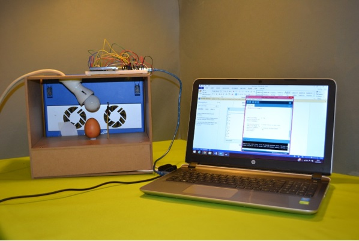
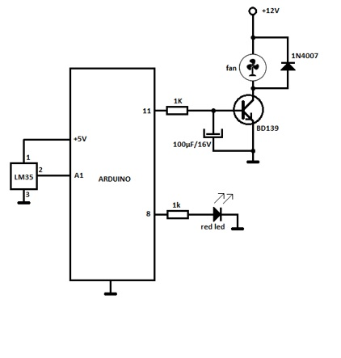

Feedback is the process by which the output from a system is analysed against a set of parameters leading to instructions being input back into the system to control or change the behaviour of that system to achieve a desired target result. In this project, feedback is used to maintain a constant temperature range within a small semi-enclosed controlled environment. The output from the system is the temperature measured by a thermal sensor within the controlled environment which is used to vary the speed of a cooling fan to regulate the temperature of the box. Typical real life applications for this system include incubators and containers requiring specific temperatures to be maintained for certain chemical or biological processes.
An open sided box measuring approximately 300x260x200mm acts as the incubator with a thermal sensory centrally placed within it. A 30W light bulb mounted within the box provides the heat source for this demonstration. A twin fan lap top cooler is vertically mounted to one side of the box to provide cooling when required. This is setup is shown on figure 1
The main part of the electronic circuitry comprises an Arduino ‘mother board’ [1] and an accompanying bread board mounted on top of the box. The board incorporates an LCD display which gives the temperature and fan speed readings. A photo showing these is shown on figure 2. The Arduino board is connected to a laptop computer running Windows 8 which is programmed to control the whole setup. The programming code is contained in appendix A of this report [2]. The circuit diagram for the fan controller identifying the main electronic components are shown on figures 3.
When the programme is initiated from the laptop, the LCD and laptop monitor display the existing temperature detected by the thermal sensor, in this case the room ambient temperature which would be around 20 deg C. For this demonstration, the temperature in the incubator is programmed to stay below 25 deg C. The light bulb is then turned on which heats the air in the box. As the temperature rises beyond the 25 deg C, the programme is coded to start the fan to cool the air. The higher the temperature rises, the faster the fan will turn. The speed of the fan is also displayed on the LCD and monitor. The fan will run sufficiently fast to lower the temperature below 25 deg C. This is a simple demonstration of how feedback from the thermal sensor is used to control the temperature of the incubator by controlling the fan speed.
#include "DHT.h" #define DHTPIN 2 #define DHTTYPE DHT11 DHT dht(DHTPIN, DHTTYPE); #include// BS E D4 D5 D6 D7 LiquidCrystal lcd(7, 8, 9, 10, 5, 12); int tempPin=A1; float tempC; int temp; int fan=11; int tempMin=25; int tempMax=31; int fanSpeed; int fanLCD; void setup() { analogReference(INTERNAL); pinMode(fan, OUTPUT); pinMode(tempPin, INPUT); Serial.begin(9600); lcd.begin(16, 2); } void loop() { temp = analogRead(tempPin); tempC = temp/10; //float h = dht.readHumidity(); // Read temperature as Celsius (the default) //float t = dht.readTemperature(); // Read temperature as Fahrenheit (isFahrenheit = true) //float f = dht.readTemperature(true); // ---------------- if(tempC <= tempMin){ fanSpeed=0; digitalWrite(fan, LOW);} if(tempC > tempMin){ fanSpeed = map(tempC, tempMin, tempMax, 70, 120);} analogWrite(fan, fanSpeed); fanLCD = map(tempC, tempMin, tempMax, 0, 100); Serial.println(fanLCD); Serial.println(tempC); lcd.print("Temp C "); lcd.setCursor(6, 0); lcd.print(tempC); lcd.setCursor(0,1); // move cursor to next line lcd.print("FANS: "); lcd.print(fanLCD); // display the fan speed lcd.print("% "); delay(2000); }